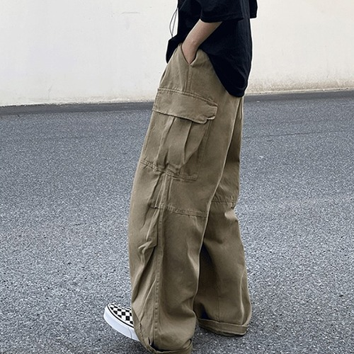
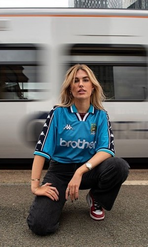
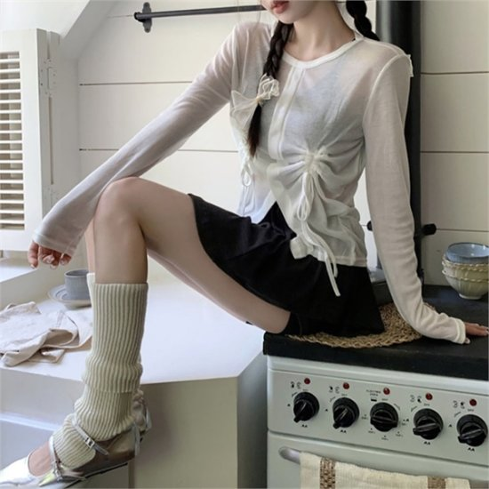

|
데님
데님은 자신의 개성을 잘 표현할 수 있는 소재로 청춘, 자유로움의 상징이다.
2023 S/S 밀라노 패션위크에서는 데님 셋업, 부츠컷 데님팬츠 등 다양한 형태의 데님패션이 눈에 띄었다.
이들의 공통된 특징은 빈티지 느낌의 워싱과 풍성한 와이드 실루엣이다. 그 중에서도 많이 보였던 것은 골반에 걸쳐 입는 '로우라이즈 팬츠'다.
많은 브랜드에서 데님을 활용하며 와이드 팬츠 / 원피스 / 트렌치코트 등 다양한 아이템이 선보이며, 평범한 데님의 색상 또한 다채롭게 표현하여 독특한 무드를 담아내고 있다.
|
|  |
포켓
포켓이 많은 유틸리티 감성을 살린 카고팬츠가 뉴욕, 밀라노에 이어 2023 S/S 파리 패션위크에서도 두드러지게 보여 올해도 Y2K의 강세가 지속될 전망이다.
올해는 다양한 핏, 소재, 디자인의 카고 바지가 출시되며 힙하고 세련된 느낌이 더 강해졌다. 더불어 유명 셀럽들까지 카고 바지를 활용한 스타일링을 선보이며 유행에 불을 지피고 있다.
다양한 포켓과 스티치 디테일이 특징인 만큼 일상적인 캐주얼 룩부터 스트리트 스타일까지 다양한 스타일에 활용할 수 있다.
|
|  |
블록코어
영국어로 남자를 뜻하는 블록(Bloke)과 평범함을 추구하는 패션이라는 뜻의 놈코어(normcore)를 합친 단어이다.
영국의 80-90년대 클럽 유니폼에서 영감을 받은 패션이다.
웨일스 보너, 발렌시아가, 마틴 로즈 등 그 외 수많은 브랜드에서 저지나 유니폼을 모티브로 하여 다양한 아이템과 컬렉션이 등장하고 있다.
블록코어 패션의 가장 대표적인 특징은 축구 저지를 활용하는 것으로 축구 저지에 청바지, 빈티지한 슈즈를 매치하면 전형적인 블록코어 코디를 연출할 수 있다.
|
|  |
발레코어
발레와 놈코어의 합성어로 발레복과 일상복의 경계가 없다는 의미가 담겨 있다.
발레복의 튜튜, 워머, 스트랩 슈즈, 트레이닝팬츠 등을 응용해 코디한 룩으로 우아하고 로맨틱하면서도 캐주얼하고 스포티한 느낌이 접목된 무드를 전달한다.
작년까지만해도 부츠컷 형태의 밑으로 갈수록 넓어지는 레그워머가 핫했지만 올해는 니트형식의 일자형 레그워머가 강세이다.
|
 Trend
Trend